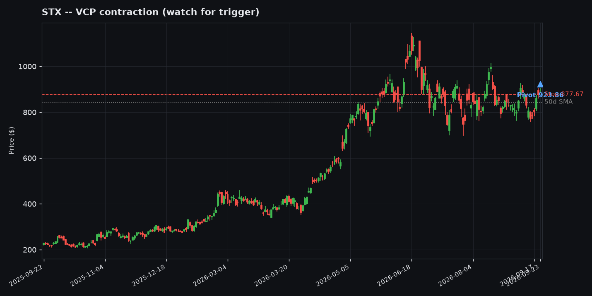
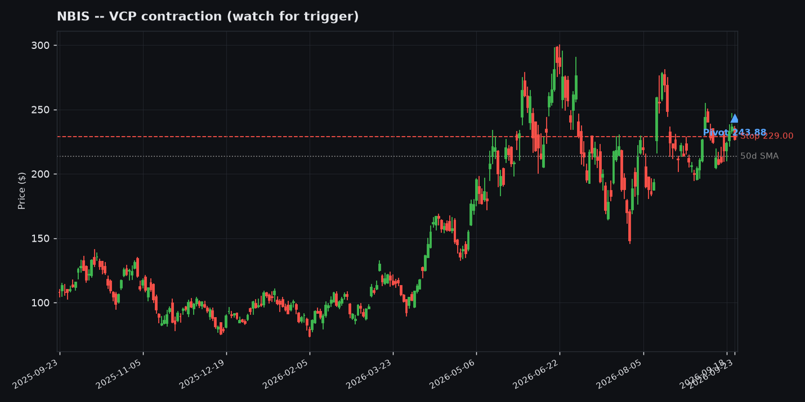
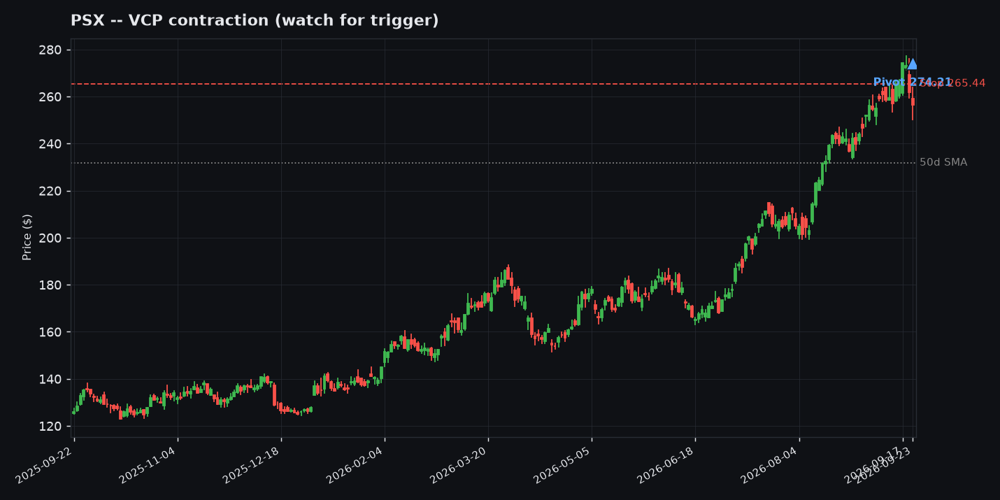
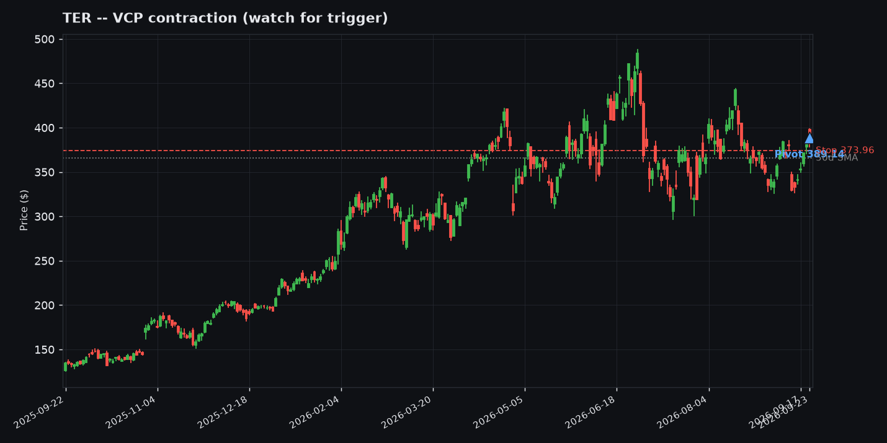
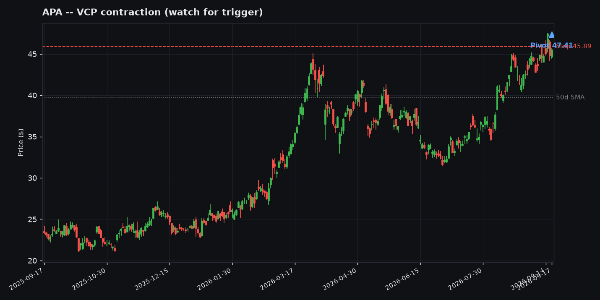
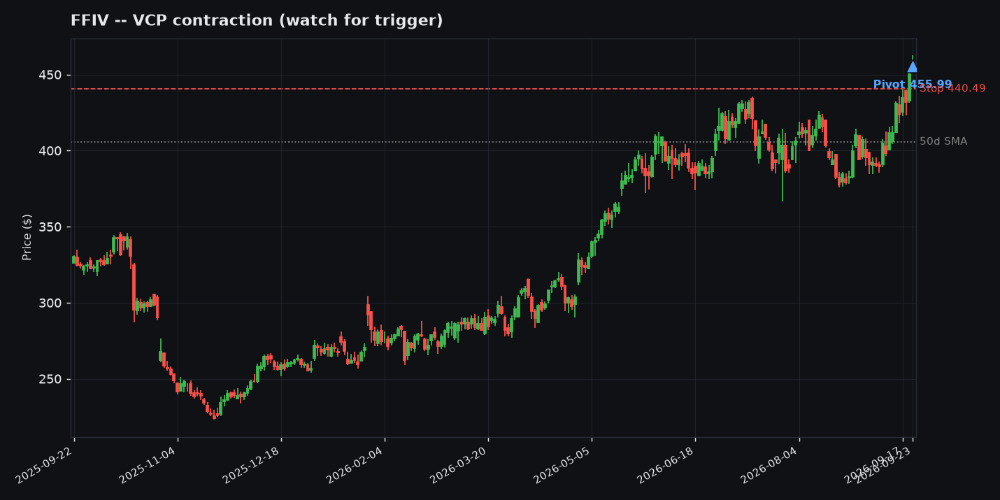
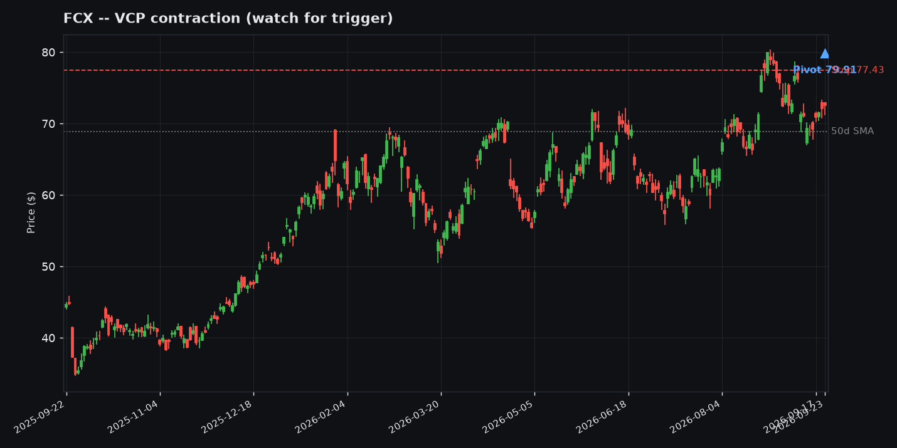
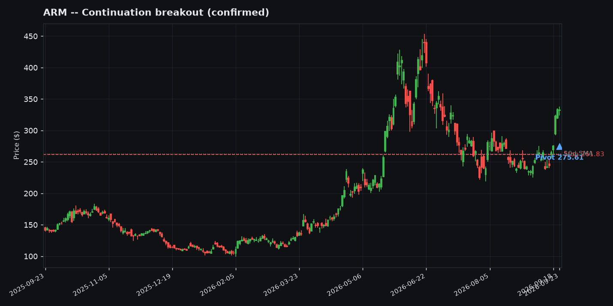

Worth Watching -- Today's Setups in Context
20 tickers as of 2026-09-24, ordered by likelihood rank (see the table above). Bars: blue = this ticker, green tick = grinder archetype avg, orange tick = rocket archetype avg. Screener output, not a recommendation.

Information Technology -- VCP contraction (watch for trigger)
Pivot 1764.17 / Stop 1663.61 / ADR% 5.7%
Why: ADR 5%+: 0.65R (n=604) + Flag pattern: 0.693R (n=342) + RS bucket: 0.547R (n=1520)
Off 52wk high22.2%
Base tightness (10d/50d)0.6x
% above 50-day SMA20.6%
% above 200-day SMA66.3%
ADR%5.7%

Information Technology -- VCP contraction (watch for trigger)
Pivot 956.14 / Stop 900.68 / ADR% 5.8%
Why: ADR 5%+: 0.65R (n=604) + RS bucket: 0.547R (n=1520)
Off 52wk high11.0%
Base tightness (10d/50d)0.7x
% above 50-day SMA10.1%
% above 200-day SMA29.6%
ADR%5.8%

Information Technology -- VCP contraction (watch for trigger)
Pivot 923.86 / Stop 877.67 / ADR% 5.0%
Why: ADR 5%+: 0.65R (n=604) + RS bucket: 0.547R (n=1520)
Off 52wk high15.5%
Base tightness (10d/50d)0.7x
% above 50-day SMA9.5%
% above 200-day SMA47.8%
ADR%5.0%

Communication Services -- VCP contraction (watch for trigger)
Pivot 243.88 / Stop 229.00 / ADR% 6.1%
Why: ADR 5%+: 0.65R (n=604) + RS bucket: 0.547R (n=1520)
Off 52wk high21.0%
Base tightness (10d/50d)0.7x
% above 50-day SMA6.2%
% above 200-day SMA39.3%
ADR%6.1%

Information Technology -- VCP contraction (watch for trigger)
Pivot 35.48 / Stop 33.64 / ADR% 5.2%
Why: ADR 5%+: 0.65R (n=604) + RS bucket: 0.343R (n=1304)
Off 52wk high9.4%
Base tightness (10d/50d)1.2x
% above 50-day SMA10.0%
% above 200-day SMA40.5%
ADR%5.2%

Information Technology -- VCP contraction (watch for trigger)
Pivot 178.74 / Stop 170.88 / ADR% 4.4%
Why: ADR 4-5%: 0.475R (n=535) + RS bucket: 0.547R (n=1520)
Off 52wk high0.0%
Base tightness (10d/50d)0.9x
% above 50-day SMA11.1%
% above 200-day SMA55.7%
ADR%4.4%

Information Technology -- VCP contraction (watch for trigger)
Pivot 262.36 / Stop 250.29 / ADR% 4.6%
Why: ADR 4-5%: 0.475R (n=535) + VCP pattern: 0.326R (n=618) + RS bucket: 0.547R (n=1520)
Off 52wk high17.5%
Base tightness (10d/50d)0.6x
% above 50-day SMA19.7%
% above 200-day SMA62.2%
ADR%4.6%

Information Technology -- VCP contraction (watch for trigger)
Pivot 199.28 / Stop 190.71 / ADR% 4.3%
Why: ADR 4-5%: 0.475R (n=535) + RS bucket: 0.343R (n=1304)
Off 52wk high5.2%
Base tightness (10d/50d)0.8x
% above 50-day SMA5.8%
% above 200-day SMA45.8%
ADR%4.3%

Information Technology -- VCP contraction (watch for trigger)
Pivot 1096.16 / Stop 1053.41 / ADR% 3.9%
Why: ADR 3-4%: 0.267R (n=1440) + RS bucket: 0.547R (n=1520)
Off 52wk high11.7%
Base tightness (10d/50d)0.6x
% above 50-day SMA14.8%
% above 200-day SMA64.2%
ADR%3.9%

Energy -- VCP contraction (watch for trigger)
Pivot 413.28 / Stop 397.58 / ADR% 3.8%
Why: ADR 3-4%: 0.267R (n=1440) + RS bucket: 0.547R (n=1520)
Off 52wk high9.1%
Base tightness (10d/50d)1.3x
% above 50-day SMA10.2%
% above 200-day SMA50.3%
ADR%3.8%

Energy -- VCP contraction (watch for trigger)
Pivot 424.89 / Stop 409.59 / ADR% 3.6%
Why: ADR 3-4%: 0.267R (n=1440) + RS bucket: 0.547R (n=1520)
Off 52wk high8.6%
Base tightness (10d/50d)1.4x
% above 50-day SMA10.7%
% above 200-day SMA54.1%
ADR%3.6%

Energy -- VCP contraction (watch for trigger)
Pivot 274.21 / Stop 265.44 / ADR% 3.2%
Why: ADR 3-4%: 0.267R (n=1440) + RS bucket: 0.547R (n=1520)
Off 52wk high6.5%
Base tightness (10d/50d)1.2x
% above 50-day SMA10.6%
% above 200-day SMA44.4%
ADR%3.2%

Health Care -- VCP contraction (watch for trigger)
Pivot 297.64 / Stop 288.41 / ADR% 3.1%
Why: ADR 3-4%: 0.267R (n=1440) + RS bucket: 0.547R (n=1520)
Off 52wk high7.1%
Base tightness (10d/50d)0.9x
% above 50-day SMA4.5%
% above 200-day SMA34.7%
ADR%3.1%

Information Technology -- VCP contraction (watch for trigger)
Pivot 389.14 / Stop 373.96 / ADR% 3.9%
Why: ADR 3-4%: 0.267R (n=1440) + RS bucket: 0.547R (n=1520)
Off 52wk high19.5%
Base tightness (10d/50d)0.6x
% above 50-day SMA6.5%
% above 200-day SMA19.2%
ADR%3.9%

Health Care -- VCP contraction (watch for trigger)
Pivot 155.53 / Stop 152.42 / ADR% 2.0%
Why: ADR 2-3%: 0.304R (n=3935) + RS bucket: 0.343R (n=1304)
Off 52wk high4.8%
Base tightness (10d/50d)0.8x
% above 50-day SMA7.2%
% above 200-day SMA24.0%
ADR%2.0%

Consumer Discretionary -- VCP contraction (watch for trigger)
Pivot 165.93 / Stop 162.28 / ADR% 2.2%
Why: ADR 2-3%: 0.304R (n=3935) + RS bucket: 0.343R (n=1304)
Off 52wk high8.0%
Base tightness (10d/50d)0.8x
% above 50-day SMA2.7%
% above 200-day SMA25.3%
ADR%2.2%

Energy -- VCP contraction (watch for trigger)
Pivot 47.41 / Stop 45.94 / ADR% 3.1%
Why: ADR 3-4%: 0.267R (n=1440) + RS bucket: 0.343R (n=1304)
Off 52wk high7.8%
Base tightness (10d/50d)1.1x
% above 50-day SMA8.3%
% above 200-day SMA27.2%
ADR%3.1%

Information Technology -- VCP contraction (watch for trigger)
Pivot 455.99 / Stop 440.49 / ADR% 3.4%
Why: ADR 3-4%: 0.267R (n=1440) + RS bucket: 0.343R (n=1304)
Off 52wk high0.0%
Base tightness (10d/50d)1.1x
% above 50-day SMA12.4%
% above 200-day SMA35.1%
ADR%3.4%

Materials -- VCP contraction (watch for trigger)
Pivot 79.91 / Stop 77.43 / ADR% 3.1%
Why: ADR 3-4%: 0.267R (n=1440) + RS bucket: 0.343R (n=1304)
Off 52wk high9.2%
Base tightness (10d/50d)0.8x
% above 50-day SMA5.4%
% above 200-day SMA16.3%
ADR%3.1%

Information Technology -- Continuation breakout (confirmed)
Pivot 275.61 / Stop 261.83 / ADR% 5.0%
Why: ADR 5-6%: 0.886R (n=150)
Off 52wk high24.3%
Base tightness (10d/50d)0.8x
% above 50-day SMA26.6%
% above 200-day SMA58.2%
ADR%5.0%